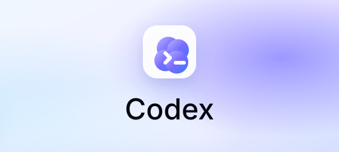

最低限ここまで・講座の標準画面
Codexをインストールする
ChatGPTアカウントでCodexデスクトップアプリを準備します。講座当日の説明画面に合わせるため、ここまでは必ず済ませます。
AI-X講座にお申し込みの皆様へ
講座ではCodexの画面を基準に説明します。最低限、Codexをダウンロードしてセットアップし、練習用フォルダで動作確認まで済ませておいてください。
余裕がある方はClaude Codeも準備しておくと、復習や比較がしやすくなります。Claude Codeまで準備する場合は、同じ AI-X フォルダで動作確認し、WindowsではGit確認まで進めます。
Setup Guides
最低限はCodexインストールガイドを確認してください。時間に余裕があれば、続けてClaude Codeインストールガイドも進めます。
講座前の最低ライン
Codexでは必ず、デスクトップに作った AI-X フォルダを選び、フォルダ確認とメモ作成を試します。Claude Codeも準備する方は、同じフォルダで同じ確認を行います。